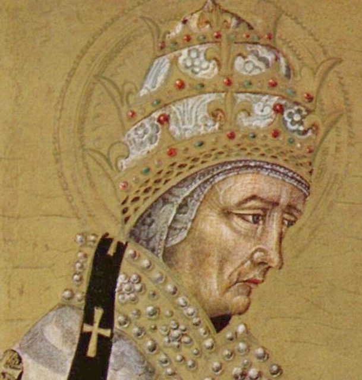

St. Fabian
St. Fabian (236-250) collected the Acts of the Martyrs, that is, the reports of the court proceedings in their trials. He suffered martyrdom at the beginning of the Decian persecution.
McSorley, Joseph. An Outline History of the Church by Centuries (from St. Peter to Pius XII). 2nd Ed. 1944.